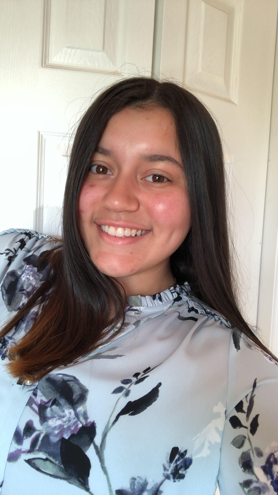
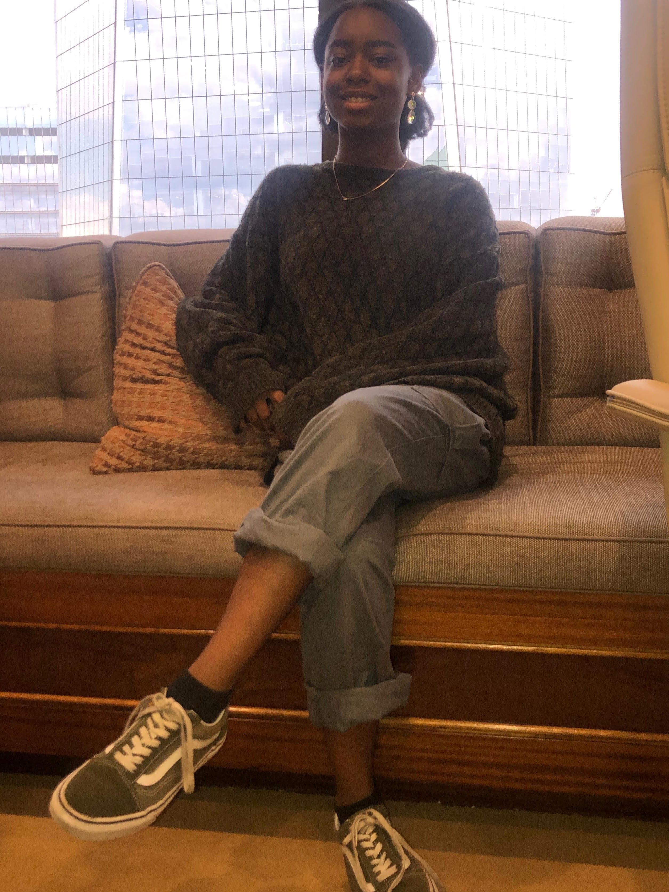
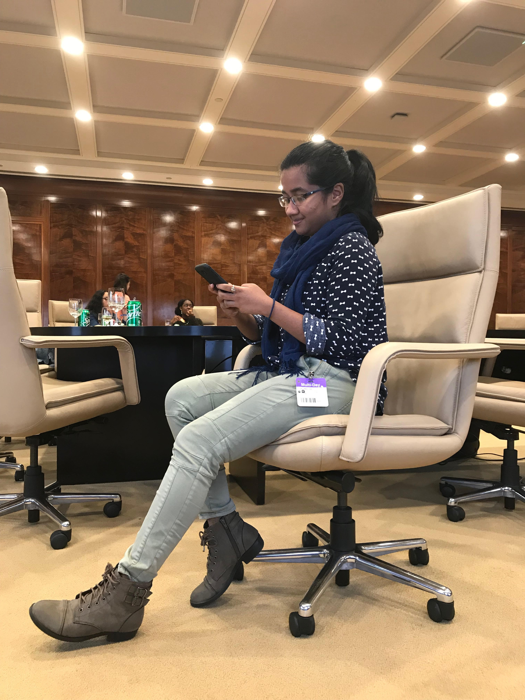
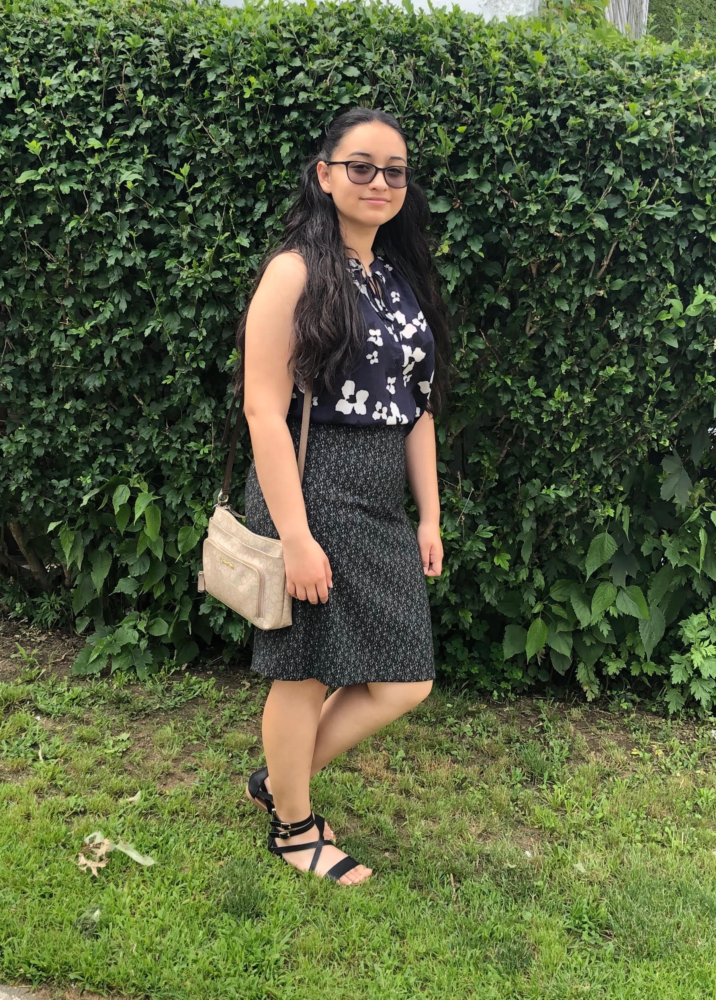

| Entertainment | Through | The | Ages |
"Picking up the pieces that fit your imagination."
-Tasnim
To provide a brief history behind the different mediums of art, film, and entertainment throughout the history of the United States (and other countries for the arts). We want to encourage and spark an interest in young people to be creative and know the history behind the numerous poignant pieces of work that have had a major impact on not only American culture, but also reflect the status of the times.
The developers of this webiste hope to explore different forms and mediums of art and entertainment, and provide an outlet for people to discover and evaluate music, films, art, and other entertainment throughout the past semi-centennial in the United States. The founders of Entertainment Through The Ages all come from different cultural backgrounds and are determined to create an archive of the history of the art, music, ad entertainment in the United States through some prominent historical events and turning points, as well as civil rights movements.
|  Rosaly |
 Arinola |
 Aranna |
 Kimberly |
|---|---|---|---|
| Rosaly is a rising senior at Yonkers Middle High School who and joined Girls Who Code to learn more about computer science and women in the STEM field. Rosaly would like to attend a liberal arts college where she will continue her computer science journey and plans on minoring in computer science with a major in medical scicences. | Arinola is a rising junior at LaGuardia High School of Music & Art and Performing Arts and joined Girls Who Code to gain more knowledge and experience in computer scinece. She is taking AP computer Science next year. She hopes to major in computer science in college. | Aranna is a rising junior at James Madison High School who joined Girls Who Code to gain experinece in coding and prepare for her AP computer science classes. Aranna would like to pursue a career in computer science with a focus in artiifial intelligence. When she is not working hard on her academics, you can find her reading great fantasy novels, listening to BTS and other music, and traveling NYC with her cousins on the R train on the weekends. | Kimberly is a rising junior at TYWLS of Queens who joined Girls Who Code for a fun and exciting experince while also hoping to pick up a new skill. She wants to become an FBI Agent in the future. She is from El Salvador and enjoys to binge watch shows and movies in her spare time. She is a very avid reader and can read books in very short time spand. |